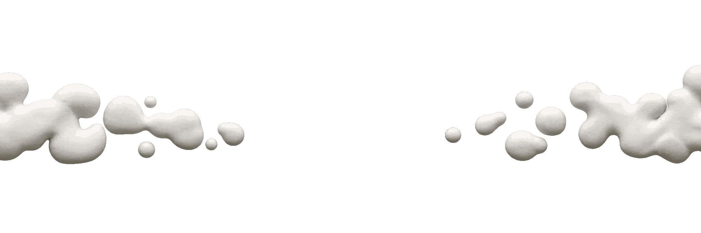

VERBA IN MOTION
VERBA IN MOTION
VERBA IN MOTION
VERBA IN MOTION

WHERE WORDS COME TO LIFE
Verba in Motion is an internal creative lab inside Verba Vitae. We assemble writers, sculptors, illustrators, and sound artists to turn literature into cinematic shorts for modern digital culture.
Real clay, physical textures, hand-manipulated armatures, and stop-motion craft that give poetic verses palpable, organic weight.
Digital illustration, kinetic typography, and frame-by-frame visual metaphors translating complex emotions into vivid imagery.
Intimate voiceovers, custom atmospheric foley, ambient drones, and dynamic pacing that pull viewers into an evocative auditory landscape.
We are building an interdisciplinary team. No commercial production experience required—just artistic conviction, dedication, and craft.
Steers the overall creative vision, coordinates poem selection and storyboarding, and directs team workflow from initial concept to release.
Brings physical tactile characters and sets to life using modeling clay, miniature props, armatures, and stop-motion photography.
Creates digital or traditional illustrations, expressive character designs, kinetic typography, and motion overlays.
Weaves together all visual captures, audio tracks, custom foley effects, and color grades into a seamless short-form film.
Step into an ambitious creative endeavor. Join fellow writers, animators, and sound designers to build Verba Vitae's inaugural poetry in motion release.